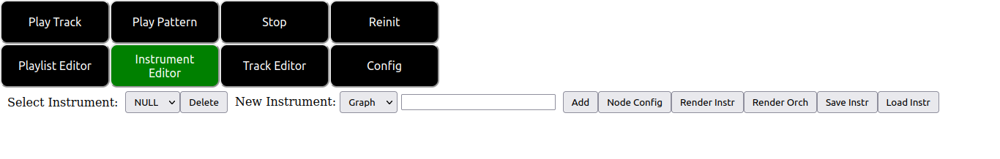
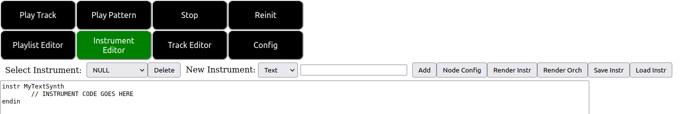
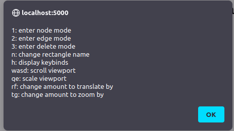
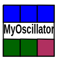
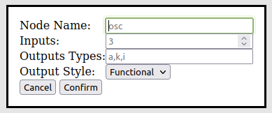
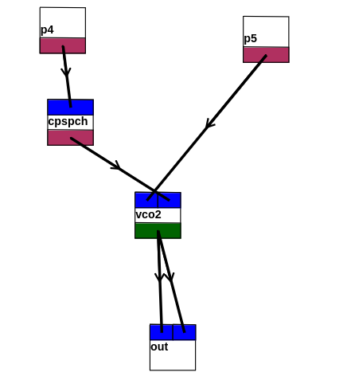

On clicking the instrument editor tab button at the top of the screen you are presented with the following user interface:

From left to right we describe the controls shown in this image:
To create a new instrument using the text mode interface, as described above, we can input a name such as “MyTextSynth” into the text field, select “Text” from the drop down and click the “Add” button. Doing this results in the following interface.

From here you may input any valid csound orchestra code into the text box to create the “MyTextSynth” instrument.
To create a new instrument using the graph mode interface, as described above, we can input a name such as “MyGraphSynth” into the text field, select “Graph” from the drop down and click the “Add” button. Doing this results in the following interface.
The canvas that has now been added to the page can be interacted with via keyboard and mouse. Importantly, take note of the text shown at the top right corner of the canvas. Information about the current mode of the canvas as well as a reminder of how to access canvas specific keybinds is shown here.
The basic idea of the graph canvas interface is that we can construct graph theoretic (i.e., node/edge diagrams) to describe our csound instruments. If you click around in the empty canvas created by the previously mentioned steps you will see that nodes are created at the coordinates of your mouse click.
By pressing h with the instrument canvas in focus (i.e. clicked on) a quick reference menu showing the canvas keybinds is displayed.

A typical node looks like the following.

The blue rectangles at the top represent the inputs to the node. The multicolored rectangles at the bottom represent the outputs of the node. The different colors of the outputs represent the different output variable type that corresponds to that output. The text between the two rectangles represents the “name” of the node.
There are two types of nodes supported by the editor so far. Functional and macro. With functional nodes (the default) a node is rendered to a line of csound code in the form <node_outputs> <node_name>(<node_inputs>) using csound functional syntax. The graph canvas takes care to work out the appropriate inputs and outputs along with their types to the node itself based on the connections you drew on the screen. Note that what I mean by this is that the naming of variables under the hood in the emitted csound code is handled for you, but nothing is stopping you from such mistakes as connecting up an output of one type to an incompatible input of another type.
With macro nodes code is rendered in the following form <node_outputs> <node_name> where the node name is any text. This may seem odd at first, but the macro mode (as the name implies) supports a simple macro find and replace facility. In the textual name of the node, any occurrence of the text @n is replaced by the corresponding variable of the nth input. So, if a node has the string “= mySillyOpcode @3 @1 @2” and @3, @1, @2 correspond to inputs var3, var1 and var2 the emitted code will be something of the form <node_outputs> = mySillyOpcode var3 var2 var1.
In order to configure a node for the currently selected instrument you may press the “node config” described above. Doing so pops up the following dialog.

The controls of this dialog are explained as follows: 1. The node name field is where you can input a name for the node you wish to create. 2. The inputs field is where you specify the number of inputs your node will accept. 3. The output types field is where you specify the number and types of outputs of your node. The outputs of a node are specified in a comma separated list containing the csound variable prefix pertaining to the type of each output. For example, if you create outputs as shown in the figure above the result will be a node with an a-rate, k-rate and i-rate output (in that order). 4. The output style dropdown is where you can choose between functional and macro mode for the given node. 5. The cancel button closes the node config dialog. 6. The okay button confirms the node being configured. After clicking confirm the graph canvas is configured so that the node you designed in the node config can now be input into your graph the next time you right click in node mode in the canvas. You should also see the text at the top right of the canvas has changed to reflect your inputs in the node config.
We distinguish between two types of nodes here. Nodes with no inputs are considered to be input nodes, i.e. they are nodes which produce values as inputs to other nodes but receive no inputs themselves. Similarly nodes with no outputs are considered output nodes, i.e. other nodes output to them, but they do not output to any other nodes.
After you are finished constructing your desired instrument in the graph canvas you may render the instrument. The rendering process constructs the code corresponding to your instrument by iterating across the list of output nodes and generating the code corresponding to that output node.
For each output node, code generation occurs by a depth first traversal of the graph of nodes connected to that output node all the way to the connected input nodes (but nodes which have already been printed so far are skipped). During this traversal code for a given node is generated in post order (i.e. after all the connected nodes have been fully traversed). This ensures lines of input code are emitted first, before generating code that depends on the previously mentioned input code.
Note that if no output nodes are specified in your graph diagram, then the graph canvas will output no code at all.
As of right now, I do not know a good way to support certain more in depth features such as control statements and jumps that exist in csound code. Additionally, my code does not allow for controlling the order in which code for the nodes are generated beyond what is already described above.
So, although the graph canvas method is more visually appealing and user friendly the inputting csound instrument code by hand, this method is somewhat more limited in ability compared to the text method. For instances where deep instrument control is required it may be better to directly code your instrument in text using the methods described above.
As an exercise, attempt to construct the instrument shown below in the graph canvas interface.

You may check your work by comparing it to the code shown below when the “Rendr Instr” button is pressed.
instr synthinstrument
i_1_0 = p5
i_0_0 = p4
i_2_0 = cpspch(i_0_0)
a_3_0 = vco2(i_1_0, i_2_0)
out(a_3_0, a_3_0)
endinHint: The variable name prefixes in the code above tell you the correct variable types to use in the node config dialog for each node.